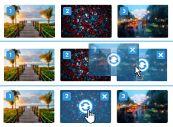
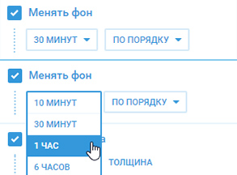
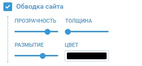
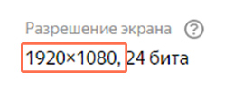
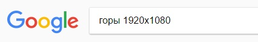
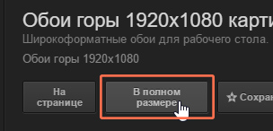
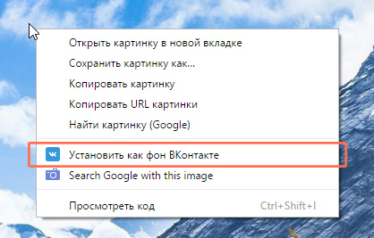

Спасибо за установку расширения
«Фон ВКонтакте»
Что нового
1
Любое количество обоев

Да, это правда!
Теперь вы можете добавлять любое количество обоев, менять их местами, удалять ненужные и включать нужный фон тогда, когда вы этого захотите.
2
Смена обоев по времени

И это тоже правда!
Теперь обои могут меняться по времени.
Так же можно менять обои по порядку или в случайном порядке.
3
Размытие обводки сайта

Да-да.
Теперь обводку сайта можно сделать мягче.
Попробуйте, это очень клево!
4
Цвет сайта
Даже Так.
Теперь можно не только сделать сайт прозрачным, но и поменять его цвет!
Функция на стадии разработки, поэтому может некорректно работать... Но вы все равно попробуйте! :)
Как установить фон
1

ВАЖНО
Первым делом узнаете разрешение своего монитора.
Сделать это можно тут: https://yandex.ru/internet/
2

Потом ищете в интернете.
Не забудьте указать разрешение.
3

ВАЖНО
Открываете подходящую картинку
в «полном размере».
в «полном размере».
4

Кликаете по ней правой
кнопкой мыши и нажимаете на
«Установить как фон ВКонтакте»
кнопкой мыши и нажимаете на
«Установить как фон ВКонтакте»
Если вам нравится это расширение, оцените его в Google Web Store.
Спасибо!
Если у вас что-то не работает, пишите в эту группу ВКонтакте.
Попытаемся вместе всё исправить :)
Спасибо!
Если у вас что-то не работает, пишите в эту группу ВКонтакте.
Попытаемся вместе всё исправить :)